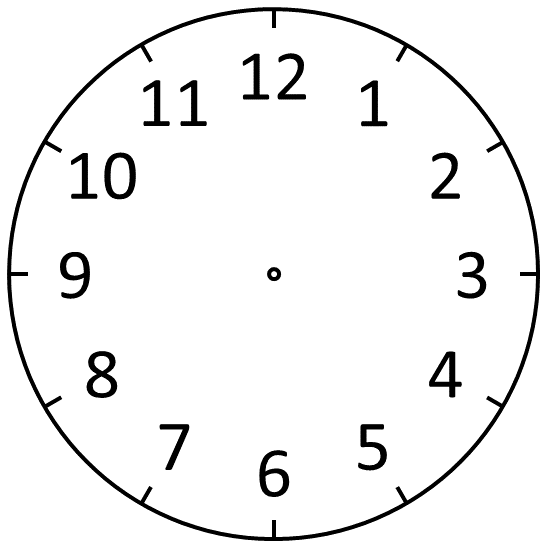

Анимация 11. Ползунок
Перетащите самолёт из Донецка в Москву. Можно использовать стрелки на клавиатуре.
Донецк
Москва
Анимация 14. Субмарина
Вращаются турбина и крестовой механизм, светятся лампочки. Корпус покачивается с наклоном ±15°, пузырьки поднимаются внутри круга.
Анимация 16. Часы

Стрелки движутся по шагам. Полный оборот: секундная — 60 с, минутная — 3600 с, часовая — 86400 с, как указано в задании. Отсчёт начинается с 12:00 при загрузке страницы.
Источник PNG: Mtanti, Wikimedia Commons (CC0).

Анимация 19. Петушок
Персонаж нарисован средствами HTML и CSS. Двигаются туловище, голова, крыло, хвост, гребешок, бородка, клюв и лапки; глаз моргает.